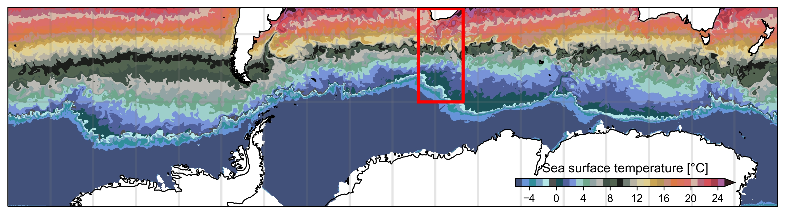

Ocean surface temperature blanket

The inspiration
You might have heard of a temperature blanket where each row of the blanket reflects a temperature (daily-mean, annual-mean). Well this is an ocean surface temperature blanket, representing a snapshot of ocean temperature in the ocean south of Africa at a single time.

About the temperture snapshot
The temperature snapshot (left) is from from the output of an ocean-ice-biogeochemical model, called BIOPERIANT12 as shown below. Blanket design
One colour of yarn was chosen to represent each temperature band (e.g. 0-1°C, 1-2°C, etc.). For ice concentration each colour of glitter yarn represents an ice coverage band e.g. 0-20%, 20-40%, etc.
1 model grid point = 1 single crochet stitch
Thus, the model grid converts into a crochet pattern such as the left example (visualised in Python).
By counting the number of grid points for each colour, and estimating how much wool I would need for each stitch. I estimated the number of balls of yarn needed for each colour, totally 35 balls.

About BIOPERIANT12
This is the original snapshot of surface temperature from the BIOPERIANT12 model shown in a different map projection. The red colours indicate warm waters, while the blues are for cool waters. Around Antartica, the blue-white shading shows ice concentration.
The BIOPERIANT12 model domain consists of domain has 4.8 million grid points at each vertical level (multiplied by 46 vertical level for a total of over 223 million grid points). The subset consists is 250 x 500 grid points or 125,000 stitches. But due to lots of user error, te stitches in any row can vary and the number of rows is ongoing (390 currently, but there might be some duplicate rows in there).
Why BIOPERIANT12 is important/why this blanket is not completed yet
The BIOPERIANT12 model represents the ocean with an approximately 3-8 km horizontal grid. It is thus able to resolve eddies and ocean fronts (10-100 km wide). This means this high resolution model is able to represent the ocean processes responsible for moving heat and carbon which great for reducing uncertainty in flux estimates and ocean understanding. Hoever, this also means more colour changes and tangles which slows down this amateur crochet artist.
It blows my mind how necessary access to supercomputers are. This model with over 223 million grid points required 3240 CPUs on the NICIS-CHPC supercomputer to run, and took about 3 months (not including all the testing): cycling over 20 years of snpshots at 10 minute intervals for 20+ variables (temperatue, salinity, ocean currents, nitrate, chlorophyll, etc.). This compared to this blanket consisting of a tiny 125,000 stitches of a subset of 1 snapshot of 1 variable that I started 2 years ago and have have yet to complete.